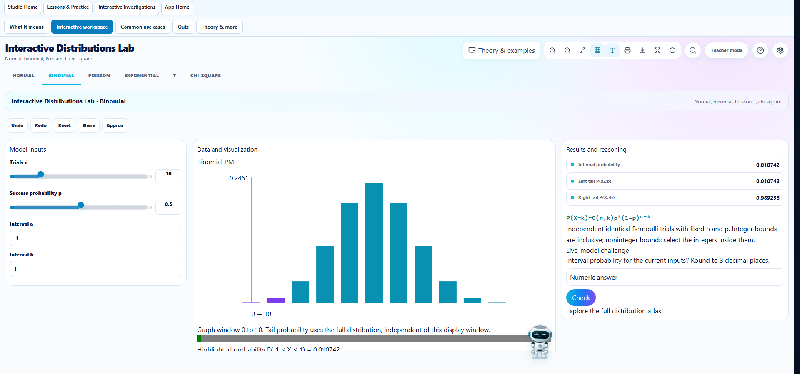

The Distribution lab placed its complete workspace inside the first column of an outer three-column grid. Its inner msk-three-column layout also lacked a CSS definition. The shared fix makes single-child workspaces span the outer grid and gives inner workspaces a desktop layout with controls, visualization and results side by side. Below 1024px these panels stack; existing mobile control toggles remain available.
Additional audit fixes keep Geometry toolbar labels wide enough and let the Trigonometry home heading wrap at desktop widths.
Browser validation: all 225 Studio routes at 390, 1366 and 1920px — 675 cases, zero layout failures or browser errors. Affected routes that timed out during a concurrent production build were rerun successfully. Targeted audit-script lint passed. The production build was stopped during that resource contention and is not claimed as passed for this change. Mathematical engines and content were not changed. Changes are local and have not been deployed.
All route results · Measured Distribution widths · Mobile screenshot

Changed shared styles: src/studios/curriculum/focusedLabs.css and src/studios/studioMobile.css. Validation scripts: scripts/check-desktop-lab-layout.mjs and scripts/audit-studio-desktop.mjs.